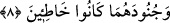
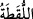
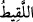
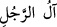

anlatmak istedi. Gözü kör oldu. Sonra bu doğan çocuğun, kâhinlerin tarif ettiği çocuk
olduğunu anladı. Görmediği halde hemen îman etti. Firavun âilesinden inanan odur.
Mûsâ’nın annesi sandığı katranla sıvadı ve Mûsâ’yı içinde uyuttu; sandığın ağzını da
katranla sıkıca kapatıp Nil nehrine attı.
Allah Teâlâ onu denize attırmadan da koruyabilirdi. Fakat Allah’ın hükmünün gâlip ve
Firavun’un ise dâvâsında yalancı olduğu bilinsin diye, onun düşmanının elinde
büyümesini ve yetişmesini istedi.
Firavun’un çabası tevfikten yoksundu
O neyi dikse o, sökülürdü
O vakit Firavun’un sadece bir kızı vardı ve başka bir çocuğu olmamıştı. Onu çok
seviyordu. Kızının abraş (derisinde leke) hastalığı vardı ve doktorlar onu tedâvî
etmekten âciz kalmışlardı.
Kâhinler şöyle demişlerdi: Falan gün Nil nehrinde küçük bir çocuk bulunur. Bu illet o
çocuğun ağzının suyu ile gider. O belirtilen gün Firavun, karısı, kızı ve mahremleri Nil
kenarında vaad edilen çocuğu beklerken, birden suyun üzerinde bir sandık belirdi.
Firavun, adamlarına onu alıp getirmelerini emretti.
8. Nihâyet Firavun âilesi onu yitik çocuk olarak (nehirden) aldı. O, sonunda
kendileri için bir düşman ve bir tasa olacaktı. Şüphesiz Firavun ile Hâmân ve
askerleri yanlış yolda idiler.
“Nihâyet Firavun âilesi onu yitik çocuk olarak (nehirden) aldı.”
Âyetin başındaki “ ”, fâ-i fasîha olup atfedildiği mahzûf bir cümleyi açıklar. “
”
kelimesi bir şeye isâbet etmek, aramadan onu elde etmek anlamına gelir. “
”
kelimesi de bu fiilden türemiştir. Koruyanı olmayan, sonradan sâhibinin görüp de
tanıdığı yitik ve buluntu mala denir. Aynı kökten müştak olan “
” ise fakirlik veya
zinâ korkusuyla yola ve benzeri yere atılmış nesebi bilinmeyen çocuk anlamına gelir.
Şâyet o yitik malın helâk olmasından korkulursa, alınıp kaldırılması gerekir. Meselâ
suda veya yırtıcı hayvanın önünde bulunması gibi. Bu konunun tafsilâtı fıkıh kitaplarında
mevcûddur.
“
(kişinin âli)” ifâdesi akrabalık, arkadaşlık veya dînî sebeplere genellikle
işlerinin kendisine dönüp dolaştığı husûsî çevresidir. Yani, annesi emrolunduğu şekilde,
Mûsâ’yı bir tabuta koyduktan sonra onu denize bıraktı. Firavun’un yakınları onu zâyî